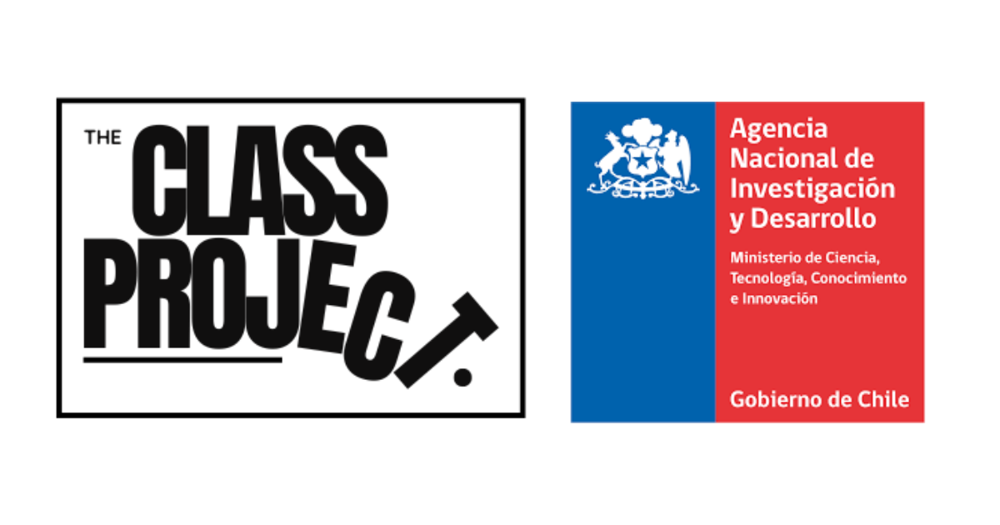

ANID adjudica Fondecyt de Iniciación a Gabriel Otero para estudiar clase y política en Chile
El proyecto «Class, personal networks and political attitudes» examinará cómo la composición de clase de las redes personales influye en las actitudes políticas de la población del Gran Santiago.

La Agencia Nacional de Investigación y Desarrollo (ANID) adjudicó el Fondecyt de Iniciación N°11240249 al investigador Gabriel Otero, académico de la Escuela de Sociología de la Facultad de Ciencias Sociales y Humanidades de la Universidad Diego Portales. El proyecto, titulado «Class, personal networks and political attitudes» (Relaciones entre clases y posiciones políticas), se desarrollará entre 2024 y 2027.
The Class Project es la plataforma que difundirá los resultados de esta investigación, buscando acercar sus hallazgos tanto a la comunidad académica como a la ciudadanía interesada.
Datos del proyecto
- Nombre oficial
- «Class, personal networks and political attitudes»
- Traducción
- Relaciones entre clases y posiciones políticas
- Investigador principal
- Gabriel Otero, Escuela de Sociología, UDP
- Financiamiento
- Fondecyt de Iniciación N°11240249 — ANID
- Período
- 2024–2027
- Foco geográfico
- Gran Santiago, Región Metropolitana
¿Qué investiga el proyecto?
¿Importa quiénes son tus amigos, vecinos y colegas para definir tus opiniones políticas? Esta es la pregunta central que guía la investigación. El proyecto examina cómo la composición de clase de las redes sociales personales influye en las actitudes políticas en Chile, en particular aquellas relacionadas con la desigualdad, la redistribución y el cambio social.
«Nuestras relaciones sociales pueden influir mucho en cómo pensamos sobre los grandes temas que dividen a la sociedad. Queremos ver si al relacionarnos con personas de otras clases sociales cambiamos nuestras opiniones, o si al juntarnos solo con gente parecida terminamos reforzando las ideas que ya teníamos».
— Gabriel Otero, investigador principalMetodología
El estudio aplicará una encuesta probabilística a población adulta del Gran Santiago. El instrumento recogerá información sobre tres dimensiones centrales:
- Situación laboral y posición económica de los y las participantes.
- Redes personales, mediante el «generador de posiciones», una técnica que mapea las características de clase de los contactos cotidianos.
- Actitudes políticas y culturales en torno a la desigualdad, inmigración, género y medioambiente.
El análisis utilizará herramientas cuantitativas avanzadas: análisis de correspondencias múltiples, técnicas de agrupamiento jerárquico y modelos de regresión multivariante.
Instrumentos de análisis
Contribución esperada
El proyecto aportará evidencia científica de alcance internacional al integrar las redes sociales personales en el análisis de clase y política. Investigaciones previas del equipo ya han mostrado que Chile presenta una alta segregación de clase en las redes personales: quienes ocupan posiciones similares en la estructura social tienden a relacionarse mayoritariamente entre sí, lo que puede influir en la formación de actitudes hacia la desigualdad.
Los resultados del Fondecyt serán clave para la discusión sobre cohesión social en Chile y podrán orientar políticas orientadas a una sociedad más integrada.
Sobre el Fondecyt de Iniciación
El Fondecyt de Iniciación tiene como propósito fomentar y fortalecer la investigación científica y tecnológica de excelencia en Chile, apoyando a investigadoras e investigadores en las etapas iniciales de su carrera a través del financiamiento de proyectos de entre 2 y 3 años de duración en todas las áreas del conocimiento.
Este proyecto es financiado por la Agencia Nacional de Investigación y Desarrollo (ANID) a través del Fondecyt de Iniciación N°11240249, «Class, personal networks and political attitudes» (Relaciones entre clases y posiciones políticas). Institución patrocinante: Universidad Diego Portales.
Financiado y apoyado por